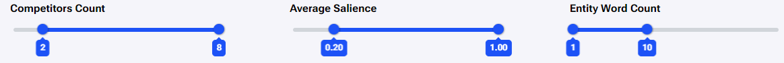

CREATING A PROJECT
To begin a new project, click on the “+ Create Project” button to open the create project form.

The project form consists of two parts:
1)The standard settings.
2)The advanced settings.
The following picture shows both parts:

Standard settings
In the standard settings type in a Project name. Under Location, choose a location by typing a location in the autocomplete text field. Next, choose the Language and Search Engine as the defaults for the project (ensuing reports) by clicking on the respective dropdown selection menus.
Advanced Settings
The advanced settings are activated by clicking on the ‘Advanced Settings’ accordion which expands and shows the Competitor Count Threshold (CCT), Salience Threshold (ST), and Word Count Threshold(WCT) . The default values for: CCT is 3, ST is 0.2, and WCT is 1. You can choose to create the project with the default values or change these values which will affect what the default values will be for the reports made in the project.
Once all the information is entered (the Project Name and Location are required fields) click “Save” and the project is created.
Create A Report
When a project is made, you can create a report with the “Create Report” form:
This form also has standard and advanced settings.
In the standard settings fill out or choose the following information: Report Name, URL (*optional), Keyword, Location, Language, Search Engine, and Scrape Frequency.
*The URL can be added later. The default location, language, and search engine are taken from the ‘Project settings’. The default Scrape Frequency is set to “Paused” so you need to adjust this to the frequency you would prefer.
If you want to change the Competitor Count Threshold (CCT), Salience Threshold (ST), and Word Count Threshold (WCT) from the Project default values, click on ‘Advanced Settings’ and enter new values as in this picture:
Creating a Report - Without a URL
To create a report without a URL, enter a Report Name, a Keyword, and a Location. The Keyword, Location, and Search Engine cannot be changed after making a report. The other settings have default values inherited from the project which can be changed in the report form. A URL can be added later after making the report.
Competitors Table
When the report is finished, the first thing you see when you open it is the competitors table. Here we can see the first 20 URLs which respond to the Keyword, Language, Location, and Search Engine entered to create the report with additional data.
Check the recommended competitors
The next step is to check the recommended competitor URLs (the default is 8) which have been selected. If necessary, you can select additional or deselect chosen competitors to edit the report and the results in the entities table will update accordingly. To change the selection, click on the boxes next to the competitors as in the picture.
Check the extracted text and adjust if needed
After checking and/or editing the competitor selection, the next step is checking and adjusting the extracted text. To access the extracted text for a competitor and edit it, click on the “Render Window” button to open the render window:
The render window shows a screenshot of the URL which was scraped, and a panel on the right side with controls and information. To access and edit the extracted text, click on the ‘Edit Extracted Text’ checkbox in the right panel, as seen in the image below (1). This opens the text editor (Extracted Text) where we can see and edit the text which was extracted.

After making the desired changes, click on ‘Save Extracted Text’ (2), and the report will update the information for the competitor and the report. A notification shows that the report has been updated.
The headers used by the competitor will be grouped at the top in the extracted text editor.
Entities Table
After checking and editing the extracted text, it is time to move on to the entities section. There we can see a list of entities that satisfy the parameters previously set for the report (Competitor Count Threshold, Salience Threshold, and Word Count Threshold). The entities section contains two tables, Timestamp Entities and Report Entities.
The Timestamp Entities table shows a list of entities with preselected entities based on recommended competitors and the report threshold values (full yellow stars).
This table also shows “Heading Average Frequency” which tells us how often competitors used these entities on average, across different heading styles (H1/H2/H3).
Check recommended entities and adjust the selections (use filters)
We can then additionally filter out entities by Competitor Count, Average Salience, and Entity Word Count. This shows other entities which were select by the predefined parameters an we can select or deselect additional report entities:
To add entities to the selection click on the empty stars. To review the final selection of entities, go to the Report Entities table. There we can deselect entities by clicking on the full yellow stars.
Content Editor
Following the finalization of entity inspection and selection, the next step is going to the ‘Content Editor’. This features a text editor where we write our content with basic writing tools and a right side panel which provides: a live content score, headings counter (with a recommended average of h1, h2 and h3 headings), word counter and recommended entities.
Write the content so you get the content score as close as possible to 100
In the Content Editor, we should write the content following the guidelines within the sidebar. By following the guidelines, the content score will go up. It is recommendable to get as close as possible to a 100. The right sidebar of the Content Editor has two sections where can see the guidelines based off of the report data which was collected and reviewed.
In the first section there is a save button to save the content created in the content editor. Just under it is the Content Score meter and counters for Average H1 uses, Average H2 uses, Average H3 uses, Average Word Count, and Average Image Count.
The second is the Entities section which is split into two categories.
Starting with “Terms in headers”. Here are the entity recommendations for the headers. These trackers show recommendations for entities to be used in headers. We can see which header was used next to each entity. Headers are grouped by usage. If one entity is used in every header then it will show “h1/h2/h3” but if it only wasn’t used in H1, then the header would have “h2/h3” tags. Headers contribute the most points when they include entities from this section.
Hovering over an entity in the ‘Terms in headers’ shows a tooltip. This tooltip shows the usage data for this entity as a header across the competitors. Clicking on the competitor (arranged by rank) will open their respective render pages. Here we can inspect the headers used by the competitor.
Below “Terms in headers” we can see “Terms in text”. Next to each entity is a tracker which tracks each use of an entity in the entire text, headers included. The range to the right is the targeted count for an entity based on the average entity frequency. This range is the ‘green zone’, which represents +-20% of the average frequency across competitors. The tracker becomes GREEN when we hit this target. The tracker is ORANGE when the number of uses is +-40% of the average frequency. Finally, the tracker is RED when the number of uses is greater than +40% of the average frequency. Red indicates overuse of the entity. The entities in “Terms in text” also have a tooltip which shows usage of an entity across competitors and other data taken from the entities table. Clicking on the checkbox next to an entity manually marks the entity as optimized.

By achieving the suggested targets from the counters for Average H1 count, Average H2 count, Average H3 count, Average Word Count, and the entity suggestions in the “Terms in headers” and “Terms in text” sections - the Content Score goes up. If the content goes above the recommended values, the Content Score goes down. When all values are met the content score reaches 100.
Create a page with the generated content and track results
Next we take the generated content and add it to our website and publish. After it is online we take the URL of our site and add it to the report. To do this, open the report, click on ‘Edit’ to open the edit section (1). Paste the link in the URL text field (2), and click Save.
Then the report will pick up the changes with the next timestamp and we can track the results and make adjustments to the content over time. Adding a URL to a report enables a new button in the content editor. This button allows us to pull content from the report URL page to the content editor.
Creating a Report - With a URL
To create a report with a targeted URL, you need to additionally fill out the URL field of the report.
The other steps are the same steps as when creating a report without a URL. Check the competitor selection, check the extracted text, as well as check and adjust the selection of entities where necessary.
The entities table does show more information for a report with a URL. It shows the average count of entities among competitors in comparison to the usage of the same entities in the report URL. The top bar indicates the average frequency of an entity across competitors, and the bottom bar indicates the average entity frequency for the report URL. It is advisable to take notice of these differences when finalizing entity selection as overused and underused entities are good candidates to be optimized.
For the bottom bar, GREEN indicates the entity is optimized. ORANGE indicates ‘medium optimization’. RED indicates ‘No Optimization’ (when the entity is underused or overused). This information is also shown in the Entity deviation chart which shows the status of the entity over time.
In this example the report had collected information 4 times. The entity “need” was not scraped once out of 4 times and was marked as “Entity is missing” for 25% of total times the report was run.

Optimizing content in the content editor
Regarding updating and optimizing the content from the report URL, copying the content from our page to the content editor and making adjustments to it is done manually. The content can be copied by clicking the “Pull report page content” button (1). This pulls the content from the report URL to the content editor. Or we can also pull content by putting a URL in the ‘Enter URL’ text field and clicking the “Try to auto import article text” button, if the content is not on the report URL (2). Otherwise the content can be directly from documents.

The goal being to get the content as close to 100 on the content score meter as possible.
Content Trackers
A report with a URL will also have a tracker for when content is created in the Content Editor (1) and a tracker for when the content from the content editor was published on the report URL(2).
When content is edited a date and time will appear next to ‘Content Updated At:’. Once content has been optimized and copied from the Content Editor to the URL, the report will pick up the changes the next time the report performs a scrape. This updates the SERP Score for the report URL and adds a date and time next to ‘Content Published at:’. Alternatively, we can spend a couple of credits and click on the re-scrape button (3) which would update the SERP score and check if the content was published. If the updated content isn’t detected for any reason, we can manually update the ‘Content Published At’ date by clicking the edit button next to it (4).
If the content is updated after it is published a small warning sign will appear to warn us the content is out of sync. This warning has a little tooltip to remind us that the content is out of sync.

Report Tags
Report tags allow us to organize reports across multiple projects. To start things off, click on ‘Tags’ in the left sidebar.
This opens the Tags table. Click on “ + Create Tag” and the Create Tag window will appear. Enter a name for the tag and click Save.
After creating a tag, go to each report you want to mark with this tag by editing reports in the reports table (1) or by editing the report in the edit section of a report (2).

Simply click on the selection menu under ‘Tags’ and a list of available tags will appear. Click on the tag you want, and click Save. Reports can have multiple tags.
To view all reports with a specific tag, click on ‘Tags’ in the left sidebar, and click on a tag in the ‘Report Tags’ table.
Alerts and Notifications
Alerts
Once the report is made and the content is updated, a good idea would be to create alerts for the report and email notifications.
The first step is to create the alerts by clicking on the ‘Alerts’ section. The first time there will be a form to create your first Alert. In the ‘Create Alert’ form fill out and make choices for: Name, Alert Type, Metric, Comparison Operator, and Threshold. The system supports alerts for Competitors and Entities.
Making Competitor Alerts
The first step is to choose ‘Competitor’ under Alert Type, this will also show a new selection field called “Competitors” (showing all the competitors from the competitors table). Next choose ‘Rank’ for Metric. After that, choose the competitor whose rank you want to track. Following that, select one of the available Comparison Operators (Above/ Below/ Between/ Deviation Threshold). Finally, enter a value for the ‘Threshold’.
If the Comparison Operator is ‘Between’ then two values (From/To) must be entered. Once all of the fields have been filled out, click Save. A notification shows that the Alert was made.
Making Entity Alerts
To make an alert for an entity, choose ‘Entity’ under Alert Type, this will show a new selection field called “Entities” (which shows all the entities from the report entities table). Next, choose a metric to track, “Frequency” or “Salience”. After that, choose an entity to track. Following that, selects one of the available Comparison Operators (Above/ Below/ Between/ Deviation Threshold). Finally, enter the desired value under threshold and click Save.
Alerts trigger if their conditions are met when the report runs a new scrape according to the defined ‘Scrape Frequency’.
After creating the first alert, there will be a table which shows all of the alerts. To make additional alerts, click on the ‘Create Alert’ button. And follow the same steps as before.
Notifications
To get notified about an alert or multiple alerts, create a notification which you will get on your email. To make a notification click on the ‘Notifications’ section in the report. The first time you will see a form to create your first Alert Notification. After creating it, there will be a table which shows all of the created notifications.
In the Create notification form, input a ‘Notification Name’, select an Alert from a selection menu (1), and click Save. A notification shows that the Alert Notification was made.
It’s possible to add more than one alert by clicking on ‘+ Add Item’ (2). Additionally, there is the option to show and use logical operators for the notifications with multiple alerts.
By clicking on the ‘Show Logical Operators?’ checkbox, the Operator selection boxes appear for each Alert. The available operators are “OR” and “AND”. By default all alerts have an “OR” operator. To add more Alert Notifications after the first one, click on the ‘Create Notification’ button in the Notifications section and follow the same steps as mentioned above.
- Creating a Project
- Create a Report
- Creating a report - Without a URL
- Competitors Table
- Check the recommended competitors
- Check the extracted text and adjust if needed
- Entities Table
- Check recommended entities and adjust the selections (use filters)
- Content Editor
- Write the content so you get the content score as close as possible to 100
- Create a page with the generated content and track results
- Creating a report - With a URL
- Optimizing content in the content editor
- Content Trackers
- Report Tags
- Alerts and Notifications
- Alerts
- Making Competitor Alerts
- Making Entity Alerts
- Notifications